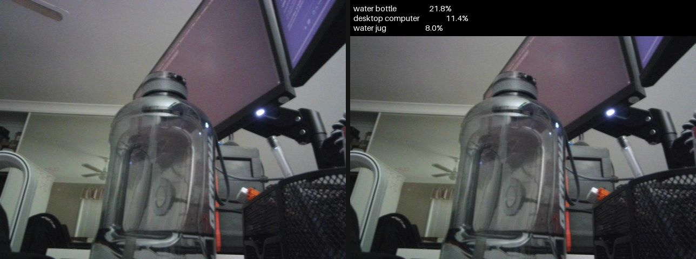

Everything to know about assigning a label to an image: how classifiers work, the mid-2026 model landscape, evaluation metrics and their pitfalls, and runnable code to benchmark the leading open backbones.
Author
Benedict Thekkel
1. What is Image Classification?
Image classification maps a whole image to one label (or a set of labels) drawn from a fixed, known list of classes. It is the oldest and most studied task in modern computer vision, and it is the task that produced almost every backbone the rest of vision runs on: the encoder inside a detector, a segmenter, or a VLM was, historically, a classifier with its head cut off.
Input. An RGB image, resized and centre-cropped to the resolution the model was trained at (224x224 for most backbones, 384/448 for high-resolution variants), then normalised per channel with the mean/std the checkpoint was trained with. Getting this preprocessing wrong is the single most common cause of “the model is inexplicably bad” - always use the checkpoint’s own AutoImageProcessor, never a hand-rolled resize.
Output. A vector of num_classes logits. softmax turns it into a probability distribution; argmax gives the prediction and topk gives the top-5. Three variants matter:
Variant
Output
Loss
Example
Single-label (multi-class)
exactly one class per image
softmax + cross-entropy
ImageNet-1k: is this a tabby or a golden retriever?
Multi-label
any number of classes per image
per-class sigmoid + BCE
tagging: “beach”, “sunset”, “two people” all true at once
Fine-grained
one class from many near-identical ones
softmax, but needs high resolution + local detail
120 dog breeds, 196 car models, plant species
The 1000 ImageNet classes are a strange mix (118 of them are dog breeds), so ImageNet accuracy is partly a fine-grained score in disguise.
Neighbouring tasks (separate models, often built on the same backbone):
Task
What it does
Typical tool
Zero-shot classification
Classify against label names given at inference, no fixed class list, no fine-tuning
CLIP / SigLIP 2 - see 11_Zero_Shot_Image_Classification
Object detection
Where is each object (boxes + classes)
see 02_Object_Detection
Image segmentation
Per-pixel labels
see 03_Image_Segmentation
Image feature extraction
The embedding, not the label (retrieval, clustering, linear probes)
see 16_Image_Feature_Extraction
Image captioning
Free-form text instead of a label
see 05_Image_to_Text
Video classification
Label a clip, not a frame
see 09_Video_Classification
Classification vs zero-shot classification is the fork worth internalising. A classifier has a closed label set baked into its head: it is fast, calibratable, and fine-tunable on your data, but it can only ever say one of its N classes, and adding class N+1 means retraining the head. A zero-shot model (CLIP/SigLIP) scores the image against text prompts, so the label set is whatever you type at inference - at the cost of accuracy, worse calibration, and sensitivity to prompt wording. If your classes are known and stable, train a head. If they change weekly, go zero-shot.
2. Real-World Use Cases
“Image classification” covers deployments with nothing in common but the shape of the output tensor. A 3 MB model triaging conveyor-belt photos in 5 ms and a 300 M-parameter backbone reading pathology slides are the same task on paper only.
Healthcare (diabetic retinopathy, dermatology, digital pathology)
Retinal fundus / slide tile -> disease grade
Sensitivity at a fixed specificity; regulatory approval; calibrated probabilities
Content moderation
Trust and safety (Meta, TikTok, Cloudflare CSAM tooling)
Uploaded image -> policy category
Throughput at billions/day; adversarial evasion; cost per image
Photo library organisation
Consumer (Google Photos, Apple Photos)
Personal photo -> multi-label tags for search
On-device size and battery, privacy (no upload), latency amortised overnight
Species and biodiversity ID
Science / consumer (iNaturalist, Merlin Bird ID)
Phone photo -> species (fine-grained, long-tailed)
Extreme class imbalance, tens of thousands of classes, open-set inputs
Retail / checkout-free stores
Retail (Amazon Just Walk Out)
Shelf-camera crop -> SKU
Fine-grained near-duplicate packaging; cheap retraining when SKUs change
Satellite land-use mapping
Geospatial (EuroSAT, Sentinel-2 pipelines)
Multispectral tile -> land cover class
Domain shift across sensors/seasons; non-RGB channels; batch, not latency
Wake-screen / camera scene modes
Mobile SoC
Live viewfinder frame -> scene class steering the ISP
Sub-10 ms on an NPU, int8, fixed memory budget
What the ImageNet number hides. Top-1 on ImageNet-1k val is a balanced, closed-set, object-centric, clean-photo number, and every one of those adjectives breaks in production. Real class distributions are long-tailed (a defect rate of 0.3% means a model that predicts “OK” always scores 99.7% accuracy). Real inputs are open-set: the model will be handed images from none of its classes and will confidently pick one anyway, because softmax must sum to 1. Real data drifts - a new camera, a new lens, a new lighting rig, a new SKU - and the model degrades silently because nobody is labelling production traffic. And the two headline robustness sets exist precisely because of this: ImageNet-V2 (a fresh test set collected with the original protocol) drops accuracy by ~10 points for every model, and ImageNet-A (natural adversarial examples) still crushes ImageNet-trained CNNs. The failure modes that matter are not “0.5% lower top-1” but confident wrong answers on out-of-distribution inputs, miscalibrated probabilities feeding a downstream threshold, and a minority class the aggregate metric was never sensitive to in the first place.
3. How Modern Image Classification Works
Five eras, and (unusually for deep learning) representatives of all of them are still competitive at some point on the size/accuracy curve:
The CNN breakthrough (2012-2015). AlexNet (2012) won ILSVRC with 8 layers, ReLU, dropout and two GPUs, halving the error of hand-crafted features. VGG (2014) showed that depth with 3x3 convs was the whole trick. ResNet (2015) added the residual connection, which made 50-150 layer networks trainable at all and is still the single most reused idea in the field - ResNet-50 (25.6M params, 76.1% top-1) remains the default baseline everyone reports against.
Efficiency-optimised CNNs (2017-2020). MobileNet (depthwise-separable convs), EfficientNet (2019, compound width/depth/resolution scaling via NAS), RegNet. This is the era that produced the models still shipping on phones, and MobileNetV4 (2024) is the current descendant.
Vision Transformers (2020).ViT cuts the image into 16x16 patches, embeds them as tokens, and runs a plain transformer encoder. Its key finding was a negative one: with only ImageNet-1k it loses to ResNets, because it has no convolutional inductive bias (locality, translation equivariance) and has to learn it from data. Pretrain it on ImageNet-21k or JFT-300M and it wins. Then DeiT (2021) showed that the missing ingredient was mostly the recipe - heavy augmentation (RandAugment, mixup, CutMix), long schedules, and a distillation token from a CNN teacher - not the data. AugReg (“How to train your ViT”, 2021) hammered the point home: the same ViT-B/16 architecture goes from ~81% to 85.1% top-1 purely by changing augmentation and regularisation.
Hierarchical / hybrid attention (2021-2022). Plain ViT has quadratic attention and one resolution, which is bad for dense tasks. Swin restores the CNN’s pyramid: local windowed attention that shifts between blocks, giving linear cost and multi-scale features - which is why Swin, not ViT, became the detection/segmentation backbone of that period. Then ConvNeXt (2022) ran the experiment in reverse: take a ResNet, apply the ViT recipe (patchify stem, depthwise 7x7 convs, LayerNorm, GELU, AdamW, heavy aug) and a pure CNN matches Swin. The conclusion the field settled on: architecture matters far less than pretraining data and training recipe.
Self-supervised backbones + a linear head (2023-2026). The current default. MAE and BEiT (masked image modelling), ConvNeXt V2 (2023, masked autoencoding for CNNs, 83.9% at 28M params), EVA-02 (2023, MIM distilled from CLIP features - 88.7% top-1 at only 87M params, still one of the best accuracy-per-parameter points in existence), DINOv2 (2023) and DINOv3 (2025) (self-distillation with no labels, on billions of curated web images), plus the vision towers of image-text models (SigLIP 2, AIMv2, Meta’s Perception Encoder, and NVIDIA’s C-RADIOv4 (2026), which distils SigLIP2 + DINOv3 + SAM3 into one encoder). The practical consequence: you almost never train a classifier from scratch. Take a frozen SSL backbone, fit a linear layer (or LoRA/full fine-tune) on your labels, and you beat a from-scratch CNN with 100x less labelled data. DINOv2’s own ImageNet linear probe hits 84.5% top-1 with the backbone frozen.
At the very top of ImageNet the benchmark is saturated: CoCa (91.0%), ViT-g/SoViT-400m (~90.3-90.5%), EVA-02-L (90.1%) - all giant models pretrained on private JFT/LAION-scale data, separated by fractions of a point that do not survive contact with a different test set.
Trade-off cheat sheet:
Family
Params (base size)
ImageNet top-1
Inductive bias
Data hunger
Best for
ResNet-50
25.6M
76.1 (80.4 with a modern recipe)
strong (conv)
low
baselines, legacy, CPU
EfficientNet / MobileNetV4
4-21M
74-84
strong
low
edge, mobile NPUs
ViT-B/16
86M
81 -> 85.1 with AugReg
none
very high
anything with big pretraining
Swin-T
28M
81.4
medium (windows)
medium
dense-prediction backbones
ConvNeXt V2-T
28.6M
83.9
strong (conv)
medium
best CNN accuracy/param
EVA-02-B (448px)
87M
88.7
none
very high
max accuracy on one GPU
Frozen SSL (DINOv2/v3) + linear
86M+
84.5-85+
none
n/a (frozen)
few labels, many downstream tasks
4. Evaluation Metrics
Top-1 / top-5 accuracy. The ImageNet convention. Top-1 is the fraction of images whose highest-scoring class is correct; top-5 counts a hit if the true class is anywhere in the five highest scores (a concession to the fact that ImageNet images often contain several objects).
Micro-F1 pools all TP/FP/FN across classes first. In single-label classification micro-F1 is exactly equal to top-1 accuracy - computing both and reporting them as two metrics is a common junior mistake.
Macro-F1 averages the per-class \(F1_c\) with equal weight per class, so a class with 10 samples counts as much as one with 10,000. This is the metric that notices you are failing the rare classes.
The class-imbalance trap. If 80% of your test set is one class, a model that predicts only that class scores 80% accuracy (and 80% micro-F1) while being useless. Its macro-F1 collapses towards \(1/C\). Always report macro-F1 (or balanced accuracy, or per-class recall) alongside accuracy on any imbalanced problem - which, in production, is all of them.
Calibration (ECE). Accuracy says nothing about whether the confidence is meaningful, and downstream systems threshold on that confidence. Expected Calibration Error bins predictions by confidence and measures the gap to observed accuracy:
Modern networks are systematically over-confident (a 99%-confidence bucket that is right 90% of the time). Temperature scaling - divide the logits by a single scalar \(T\) fitted on a validation split - fixes most of it and costs nothing.
Confusion matrix. The only thing that tells you what the model confuses with what. Aggregate metrics hide structure: “84% top-1” can mean uniform mediocrity or perfection everywhere except two classes that are 50/50 with each other.
Speed metrics. Images/sec at a stated batch size, latency p50/p99 at batch 1 (what a user feels), params (M) and FLOPs/GMACs. Accuracy per unit latency is the real deployment axis - see the benchmark scatter in section 12.
The toy example below builds a deliberately imbalanced test set and a “lazy” model that has learned the majority class well and the rare ones badly - watch accuracy stay high while macro-F1 falls apart:
import numpy as nprng = np.random.default_rng(0)n_classes =10# Imbalanced test set: class 0 is 80% of the data, classes 1-9 share the rest.y_true = np.concatenate([np.zeros(400, int), np.repeat(np.arange(1, 10), 11)[:100]])n =len(y_true)# A "lazy" model: confident and correct on the majority class, weak on the rare ones,# and biased towards predicting class 0 everywhere (the usual imbalanced-training failure).logits = rng.normal(scale=1.0, size=(n, n_classes))logits[np.arange(n), y_true] += np.where(y_true ==0, 3.0, 0.6) # signal, strong only for class 0logits[:, 0] +=1.0# majority-class prior baked into the headprobs = np.exp(logits - logits.max(1, keepdims=True))probs /= probs.sum(1, keepdims=True)order = np.argsort(-probs, axis=1) # classes sorted by score, best firsty_pred = order[:, 0]def top_k_accuracy(order, y_true, k):"Fraction of samples whose true class is in the top-k scored classes."returnfloat((order[:, :k] == y_true[:, None]).any(axis=1).mean())def f1_scores(y_true, y_pred, n_classes):"Per-class F1, plus (macro, micro) averages. Micro-F1 == top-1 accuracy here." f1 = np.zeros(n_classes)for c inrange(n_classes): tp =int(((y_pred == c) & (y_true == c)).sum()) fp =int(((y_pred == c) & (y_true != c)).sum()) fn =int(((y_pred != c) & (y_true == c)).sum()) denom =2* tp + fp + fn f1[c] =2* tp / denom if denom else0.0 micro =float((y_pred == y_true).mean()) # single-label: micro-F1 collapses to accuracyreturn f1, float(f1.mean()), microdef expected_calibration_error(probs, y_true, n_bins=10):"ECE: average |accuracy - confidence| over equal-width confidence bins." conf = probs.max(axis=1) correct = (probs.argmax(axis=1) == y_true).astype(float) edges = np.linspace(0, 1, n_bins +1) ece =0.0for lo, hi inzip(edges[:-1], edges[1:]): m = (conf > lo) & (conf <= hi)if m.any(): ece += m.mean() *abs(correct[m].mean() - conf[m].mean())returnfloat(ece)f1, macro_f1, micro_f1 = f1_scores(y_true, y_pred, n_classes)print(f"support : class 0 = {(y_true ==0).sum()}, classes 1-9 = {(y_true !=0).sum()}")print(f"top-1 accuracy : {top_k_accuracy(order, y_true, 1):.3f} <- looks respectable")print(f"top-5 accuracy : {top_k_accuracy(order, y_true, 5):.3f}")print(f"micro-F1 : {micro_f1:.3f} <- identical to top-1, by construction")print(f"macro-F1 : {macro_f1:.3f} <- the honest number")print(f"F1 class 0 : {f1[0]:.3f} | mean F1 over rare classes: {f1[1:].mean():.3f}")print(f"ECE (10 bins) : {expected_calibration_error(probs, y_true):.3f}")
support : class 0 = 400, classes 1-9 = 99
top-1 accuracy : 0.820 <- looks respectable
top-5 accuracy : 0.940
micro-F1 : 0.820 <- identical to top-1, by construction
macro-F1 : 0.263 <- the honest number
F1 class 0 : 0.957 | mean F1 over rare classes: 0.185
ECE (10 bins) : 0.159
Why the robustness sets matter. Every model on this page was tuned, directly or by the community’s collective hill-climbing, against the same 50k ImageNet validation images. ImageNet-V2 re-runs the original collection protocol on fresh photos and every model loses ~10 points - proof that some of the last decade of progress is validation-set overfitting. ImageNet-A and -R then ask whether the model learned objects or textures and backgrounds; the gap between a CNN and a large SSL/CLIP-pretrained ViT is far wider there than on the val set. If you only ever report in-distribution top-1, you have not measured the thing you care about.
Gating.ILSVRC/imagenet-1k and the timm WDS mirrors require accepting the ImageNet terms on the Hub (and an HF_TOKEN). The evanarlian/imagenet_1k_resized_256 mirror used below is ungated and carries the same 1000 ClassLabels in the standard index order, so its labels line up directly with every HF ImageNet classifier’s id2label.
6. The Model Landscape (mid-2026)
Papers-with-Code (the historical leaderboard home) was shut down in July 2025; the living, reproducible ranking is now the timm results table - every number below is from it, measured on the same 50k images with the checkpoint’s own preprocessing. The HF hub filter for the task is models?pipeline_tag=image-classification.
Who wins what. On pure accuracy per GPU-hour of yours, EVA-02-B at 448px is the standout: 88.7% top-1 from 87M params, i.e. it beats ConvNeXt V2-T by ~5 points for 3x the parameters but ~5x the compute (448px, patch 14, so ~1024 tokens). On accuracy per parameter and per millisecond, ConvNeXt V2-T is the sweet spot and is what most “just make it good and fast” services should use. On edge (section 2’s phone/NPU and in-line-inspection rows), MobileNetV4 and EfficientNetV2-S are the only serious options - a 3.8M-param model that runs int8 on an NPU is worth more than 10 points of top-1 you cannot afford. On few labels (the medical and biodiversity rows, where labelling is the cost), a frozen DINOv2/DINOv3 backbone plus a linear head is the correct default: no backbone training, one feature extraction pass, and you can swap the head per task. And the top of the table - CoCa, ViT-g - is a research artefact: closed weights, JFT-scale private data, and a fraction of a point apart.
7. Setup
Everything below runs on a 12 GB RTX 3060 (or CPU, slowly), and every model loads through Hugging Face transformers. Package roles:
transformers (>=5.13) + torch - all five backbones. Note transformers also loads timm checkpoints natively through TimmWrapperForImageClassification, so a timm/... id drops into AutoModelForImageClassification and the image-classification pipeline exactly like a native one; timm is the standard general-purpose backbone library, not a vendor package.
accelerate - device placement.
datasets - the ImageNet-1k validation mirror (with labels).
The val split of the eval dataset is ~750 MB and caches into DL_tasks/datasets/ (gitignored) on first run.
# Everything runs through Hugging Face transformers - no vendor packages.# %pip install -q torch transformers datasets accelerate timm pillow pyecharts pandas
import ctypesimport ctypes.utilimport gcimport timeimport urllib.requestfrom pathlib import Pathimport torchfrom dotenv import find_dotenv, load_dotenv# Knowledge/.env sets HF_TOKEN - authenticated HF Hub requests get higher rate limitsload_dotenv(find_dotenv(usecwd=True))device ="cuda:0"if torch.cuda.is_available() else"cpu"dtype = torch.float16 if device !="cpu"else torch.float32if device !="cpu":print(torch.cuda.get_device_name(0))print("device:", device)def vram(tag=""):"Report current GPU memory (allocated / reserved). No-op on CPU."if torch.cuda.is_available(): alloc = torch.cuda.memory_allocated() /1e9 reserved = torch.cuda.memory_reserved() /1e9print(f"VRAM {tag:20s}{alloc:5.2f} GB allocated / {reserved:5.2f} GB reserved")def free_memory():"Collect garbage, empty the CUDA cache, and return freed CPU RAM to the OS." gc.collect()if torch.cuda.is_available(): torch.cuda.empty_cache() torch.cuda.ipc_collect()# glibc keeps freed CPU allocations in its arenas instead of returning them# to the OS, so RSS compounds across model sections (cpu-offloaded weights# live in system RAM). malloc_trim(0) hands the freed arenas back. See# dl-visualization-and-memory.instructions.md - not optional on a 12 GB box.try: ctypes.CDLL(ctypes.util.find_library("c") or"libc.so.6").malloc_trim(0)exceptException:pass# All downloads go to DL_tasks/datasets/ (gitignored)DATA_DIR = Path("../../datasets")DATA_DIR.mkdir(exist_ok=True)HF_CACHE =str(DATA_DIR /"hf_cache")
NVIDIA GeForce RTX 3060
device: cuda:0
from datasets import ClassLabel, load_dataset, load_dataset_builderfrom PIL import Image# The canonical COCO cats photo - two cats on a pink sofa with two remotes.SAMPLE = DATA_DIR /"cats.jpg"ifnot SAMPLE.exists(): urllib.request.urlretrieve("http://images.cocodataset.org/val2017/000000039769.jpg", SAMPLE)image = Image.open(SAMPLE).convert("RGB")# ImageNet-1k validation, ungated mirror (shortest side resized to 256px), 50,000# labelled images. Load ONLY the validation shards: a plain# load_dataset(..., split="val") downloads every data file in the repo first - the# 52 train shards (~23 GB) as well - and then splits, which fills a small disk. Using# the generic "parquet" loader on an hf:// glob fetches just the 2 val shards (~0.9 GB)# and takes its split set from the data_files keys, so it does not trip the repo's# declared train/test/val verification (ExpectedMoreSplitsError). The ClassLabel names# come from the dataset metadata (no image download) and are cast back onto the# plain-int label column, so `label` lines up with every HF classifier's id2label in# standard ImageNet index order, no remapping needed.IMAGENET_LABELS = load_dataset_builder("evanarlian/imagenet_1k_resized_256").info.features["label"].namesval = load_dataset("parquet", data_files={"val": "hf://datasets/evanarlian/imagenet_1k_resized_256/data/val-*.parquet"}, split="val", cache_dir=HF_CACHE,).cast_column("label", ClassLabel(names=IMAGENET_LABELS))EVAL_N =200# a smoke-test slice; the full split is 50k imageseval_ds = val.shuffle(seed=0).select(range(EVAL_N))print(val)print("class 281 =", IMAGENET_LABELS[281])print("eval sample labels:", [IMAGENET_LABELS[l].split(",")[0] for l in eval_ds["label"][:5]])image.resize((image.width //2, image.height //2))
The model every paper still reports against: 25.6M params, 76.1% top-1, residual blocks, 2015. It is the honest floor for this task - if a modern approach cannot beat ResNet-50 on your data, the problem is your data, not the architecture. microsoft/resnet-50 is the original torchvision-recipe weights; timm/resnet50.a1_in1k is the same network retrained with a 2021 recipe and scores 80.4%, which is the single cheapest 4 points in computer vision.
The image-classification pipeline handles resize, centre-crop, normalisation and softmax for you.
from transformers import pipelineclf = pipeline("image-classification", model="microsoft/resnet-50", device=device, dtype=dtype, model_kwargs={"cache_dir": HF_CACHE},)t0 = time.perf_counter()preds = clf(image, top_k=5)print(f"{time.perf_counter() - t0:.2f}s")for p in preds:print(f"{p['score']:6.2%}{p['label']}")del clffree_memory()vram("after resnet-50")
google/vit-base-patch16-224: 224x224 image -> 196 patches of 16x16 -> a plain 12-layer transformer encoder, classified from the [CLS] token. Pretrained on ImageNet-21k, fine-tuned on ImageNet-1k. This is the checkpoint most vision-transformer tutorials use and the ancestor of nearly every modern vision backbone (CLIP, SigLIP, DINOv2 and EVA are all ViTs with different pretraining).
Here we drive it with the processor/model API instead of the pipeline, because that is the shape you need for batching, custom heads, and fine-tuning. Note the raw output is logits, not probabilities - softmax them before you threshold on anything.
ConvNeXt (2022) took a ResNet and applied every ViT design decision - patchify stem, depthwise 7x7 convolutions, inverted bottlenecks, LayerNorm, GELU, AdamW, heavy augmentation - and matched Swin without a single attention layer. ConvNeXt V2 (2023) then added the missing piece, self-supervised pretraining: a fully-convolutional masked autoencoder (FCMAE) plus a Global Response Normalization layer to stop feature collapse.
facebook/convnextv2-tiny-22k-224 is the accuracy/param sweet spot of this notebook: 83.9% top-1 from 28.6M params, beating ViT-B/16’s original checkpoint with a third of the parameters, and it is a plain CNN, so it quantises and runs on edge hardware far more gracefully than a ViT.
convnext = pipeline("image-classification", model="facebook/convnextv2-tiny-22k-224", device=device, dtype=dtype, model_kwargs={"cache_dir": HF_CACHE},)t0 = time.perf_counter()preds = convnext(image, top_k=5)print(f"{time.perf_counter() - t0:.2f}s")for p in preds:print(f"{p['score']:6.2%}{p['label']}")del convnextfree_memory()vram("after convnextv2-tiny")
11. DINOv2 + a linear head: the frozen-backbone default
This is how classification is actually done in 2026 when you have a few thousand labels instead of a million. DINOv2 (Meta, 2023) is a ViT trained with no labels at all - self-distillation on 142M curated images. facebook/dinov2-base-imagenet1k-1-layer is that frozen backbone with one linear layer fitted on ImageNet: ~84.5% top-1, i.e. a single matrix multiply on frozen features beats a fully fine-tuned ViT-B/16 and every from-scratch CNN below 30M params.
The practical recipe for your own data: run every image through the frozen backbone once, cache the embeddings, then fit a logistic regression / linear layer on them. Training takes seconds on a CPU, needs no augmentation, and cannot overfit the backbone. Fine-tune only if the linear probe is not good enough.
DINOv3 (2025) is the stronger successor (1.7B images, better dense features), but its checkpoints are gated on the Hub - facebook/dinov3-vitb16-pretrain-lvd1689m requires accepting Meta’s terms and an HF_TOKEN, so this notebook uses DINOv2 to stay runnable out of the box. See 16_Image_Feature_Extraction for the embedding side of this, and 11_Zero_Shot_Image_Classification for the no-head-at-all alternative.
dinov2_id ="facebook/dinov2-base-imagenet1k-1-layer"processor = AutoImageProcessor.from_pretrained(dinov2_id, cache_dir=HF_CACHE)model = AutoModelForImageClassification.from_pretrained(dinov2_id, dtype=dtype, cache_dir=HF_CACHE).to(device).eval()# The head really is one nn.Linear on top of a frozen ViT-B/14 encoder:print("classifier head:", model.classifier)inputs = processor(images=image, return_tensors="pt").to(device=device, dtype=dtype)t0 = time.perf_counter()with torch.inference_mode(): probs = model(**inputs).logits.float().softmax(-1)[0]print(f"{time.perf_counter() - t0:.2f}s")top5 = probs.topk(5)for score, idx inzip(top5.values.tolist(), top5.indices.tolist()):print(f"{score:6.2%}{model.config.id2label[idx]}")del model, processor, inputs, probsfree_memory()vram("after dinov2")
Five backbones, the same 200 ImageNet-1k validation images, the same metric, one model live at a time. Each model brings its own AutoImageProcessor, so each gets its own correct resize/crop/normalisation - which is the point: comparing backbones under a shared hand-rolled transform is the classic way to accidentally hobble one of them.
timm/eva02_base_patch14_448... loads through transformers via the TimmWrapper integration, so a timm checkpoint needs no special code path. It runs at 448px with patch-14, so ~1024 tokens per image - expect it to be several times slower than the 224px models, and expect it to be several points more accurate.
Hardware and caveats: RTX 3060 (12 GB), fp16, batch size 16, 200 images. Two hundred images out of 50,000 gives a standard error of roughly +/-2.5 points on top-1, so this is a smoke test, not a leaderboard - treat differences under ~5 points as noise, and use the timm results table for real numbers. The images/sec figure includes preprocessing on the CPU (4 vCPU here), which is itself a bottleneck for the 448px model.
BACKBONES = ["microsoft/resnet-50","google/vit-base-patch16-224","microsoft/swin-tiny-patch4-window7-224","facebook/convnextv2-tiny-22k-224","timm/eva02_base_patch14_448.mim_in22k_ft_in22k_in1k", # timm ids load via TimmWrapper]BATCH_SIZE =16@torch.inference_mode()def evaluate(model_id, ds, batch_size=BATCH_SIZE):"Top-1 / top-5 / images-per-sec for one checkpoint. Frees the model before returning." proc = AutoImageProcessor.from_pretrained(model_id, cache_dir=HF_CACHE) model = AutoModelForImageClassification.from_pretrained( model_id, dtype=dtype, cache_dir=HF_CACHE ).to(device).eval() params_m =sum(p.numel() for p in model.parameters()) /1e6 hits1 = hits5 =0 t0 = time.perf_counter()for i inrange(0, len(ds), batch_size): batch = ds[i : i + batch_size] images = [im.convert("RGB") for im in batch["image"]] labels = torch.tensor(batch["label"]) inputs = proc(images=images, return_tensors="pt").to(device=device, dtype=dtype) logits = model(**inputs).logits.float().cpu() # move off the GPU before the next batch top5 = logits.topk(5, dim=-1).indices hits1 +=int((top5[:, 0] == labels).sum()) hits5 +=int((top5 == labels[:, None]).any(dim=-1).sum())del inputs, logits, images elapsed = time.perf_counter() - t0del model, proc # never hold two backbones live at once free_memory()return {"model": model_id.split("/")[-1].split(".")[0],"top1": hits1 /len(ds),"top5": hits5 /len(ds),"img_per_s": len(ds) / elapsed,"params_m": params_m, }results = []for model_id in BACKBONES: r = evaluate(model_id, eval_ds) results.append(r)print(f"{r['model']:32s} top1 {r['top1']:6.1%} top5 {r['top5']:6.1%} "f"{r['img_per_s']:6.1f} img/s {r['params_m']:5.1f}M params")vram("after benchmark")
# The real deployment axis: accuracy vs throughput, with model size as the bubble.scatter = Scatter().add_xaxis([round(v, 1) for v in df["img_per_s"].tolist()])for row in df.itertuples(): scatter.add_yaxis( series_name=row.model, y_axis=[[round(row.img_per_s, 1), float(row.top1_pct)]], symbol_size=max(12, min(60, float(row.params_m) **0.5*5)), # area ~ params label_opts=opts.LabelOpts(is_show=False), )scatter.set_global_opts( title_opts=opts.TitleOpts( title="Accuracy vs speed", subtitle="bubble area ~ parameter count; up and to the right wins" ), xaxis_opts=opts.AxisOpts(type_="value", name="images / sec", splitline_opts=opts.SplitLineOpts(is_show=True)), yaxis_opts=opts.AxisOpts(type_="value", name="top-1 (%)", min_=50, splitline_opts=opts.SplitLineOpts(is_show=True)), tooltip_opts=opts.TooltipOpts(formatter="{a}: {c} (img/s, top-1 %)"), legend_opts=opts.LegendOpts(pos_top="8%", pos_right="1%", orient="vertical"),)scatter.render_notebook()
13. The Confusion Matrix: where the aggregate number hides the failure
Top-1 tells you how often; only a confusion matrix tells you what for what. ImageNet’s five domestic-cat classes (tabby, tiger cat, Persian cat, Siamese cat, Egyptian cat) are a notorious cluster: tabby and tiger cat are barely distinguishable even for humans, and a large share of every model’s “errors” on them are arguably annotation disagreements rather than model failures.
Below: all 250 validation images of those five classes (50 each), classified by ConvNeXt V2-T, with anything predicted outside the group folded into an other column. Read along a row to see what a true class gets called. This is exactly the structure that a single 84% number erases - and the reason a per-class recall breakdown belongs in every model report.
from pyecharts.charts import HeatMapCAT_IDS = [281, 282, 283, 284, 285] # tabby, tiger cat, Persian cat, Siamese cat, Egyptian catCAT_NAMES = [IMAGENET_LABELS[i].split(",")[0] for i in CAT_IDS]# Filter on the label column only (input_columns) so no image is decoded during the scan.cats = val.filter(lambda label: label in CAT_IDS, input_columns="label")print(cats, "\nclasses:", CAT_NAMES)cm_id ="facebook/convnextv2-tiny-22k-224"proc = AutoImageProcessor.from_pretrained(cm_id, cache_dir=HF_CACHE)model = AutoModelForImageClassification.from_pretrained(cm_id, dtype=dtype, cache_dir=HF_CACHE).to(device).eval()# rows = true class, cols = predicted class (+ an "other" bucket for the other 995 classes)counts = [[0] * (len(CAT_IDS) +1) for _ in CAT_IDS]with torch.inference_mode():for i inrange(0, len(cats), 16): batch = cats[i : i +16] inputs = proc(images=[im.convert("RGB") for im in batch["image"]], return_tensors="pt") pred = model(**inputs.to(device=device, dtype=dtype)).logits.float().argmax(-1).cpu().tolist()for true_id, pred_id inzip(batch["label"], pred): col = CAT_IDS.index(pred_id) if pred_id in CAT_IDS elselen(CAT_IDS) counts[CAT_IDS.index(true_id)][col] +=1del inputsdel model, procfree_memory()recall = [row[i] /max(1, sum(row)) for i, row inenumerate(counts)]for name, row, r inzip(CAT_NAMES, counts, recall):print(f"{name:12s} recall {r:5.1%}{row}")print(f"macro recall over the 5 cat classes: {sum(recall) /len(recall):.1%}")
cols = CAT_NAMES + ["other"]# HeatMap wants [x_index, y_index, value]; y is inverted so row 0 renders at the top.data = [[x, len(CAT_NAMES) -1- y, counts[y][x]] for y inrange(len(CAT_NAMES)) for x inrange(len(cols))]heat = ( HeatMap() .add_xaxis(cols) .add_yaxis("count",list(reversed(CAT_NAMES)), data, label_opts=opts.LabelOpts(is_show=True, position="inside", color="#111"), ) .set_global_opts( title_opts=opts.TitleOpts( title="Confusion matrix: ImageNet cat classes", subtitle="ConvNeXt V2-T, 250 val images (50 per class). rows = truth, cols = prediction", ), xaxis_opts=opts.AxisOpts(name="predicted", axislabel_opts=opts.LabelOpts(rotate=25)), yaxis_opts=opts.AxisOpts(name="true"), visualmap_opts=opts.VisualMapOpts(min_=0, max_=50, orient="vertical", pos_right="2%"), tooltip_opts=opts.TooltipOpts(is_show=True), ))heat.render_notebook()
14. Live Webcam Demo
Classify the camera stream with a fast model (ConvNeXt V2-Tiny, 28M params). The right pane carries the top-3 predictions burned into the frame, and the status line adds the running end-to-end FPS.
Point it at a few different objects and watch the confidences move. The interesting failure is not a wrong label, it is a confident wrong label on a frame that happens to look like something in ImageNet - which is the whole argument for the zero-shot models in 11_Zero_Shot_Image_Classification.
The view is live: the left pane is the raw camera, the right pane is the same frame after the model, and both update in place through a display handle - no cv2.imshow, no GUI, so it works over JupyterLab against a headless container. A status line underneath carries the running FPS and the per-frame numbers. It runs for STREAM_SECONDS seconds; interrupt the kernel to stop it early.
Two things throttle the frame rate before the model does, both measured on this machine: auto-exposure drops the sensor to 15 FPS in a dim room (take exposure off auto to pin 30), and setting CAP_PROP_BUFFERSIZEhalves the delivered rate on the V4L2 backend, so the helper deliberately does not set it.
Needs a real camera at /dev/video0 - the cell raises rather than substituting stand-in images. The docs builder never runs it (skip_exec: true).
# opencv-python-headless is a project dependency; the headless build captures from# V4L2 fine, it only drops the GUI windows.import ioimport timeimport cv2import numpy as npimport torchfrom IPython.display import Image as IPyImagefrom IPython.display import Pretty, displayfrom PIL import Image, ImageDraw, ImageFontCAM =0# /dev/video0WARMUP =10# throwaway reads - auto-exposure and white balance need to settleSTREAM_SECONDS =15# how long a live demo runs; interrupt the kernel to stop earlydef bootstrap(*names, notebook, sections):"""Make this demo runnable on a cold kernel, without duplicating the notebook. The demo builds on the notebook's setup and helper cells. Instead of making you run them by hand - or copying them in here and letting the copies drift - this reads the notebook file and executes those sections itself, and only when a name is actually missing. Run the notebook top to bottom and it does nothing at all. It stops as soon as every required name exists, so trailing benchmark cells in a section are not run. """ifall(n inglobals() for n in names):returnimport jsonfrom pathlib import Pathfrom IPython.utils.capture import capture_output path = Path(notebook)ifnot path.exists():raiseNameError(f"this demo needs {', '.join(n for n in names if n notinglobals())}, and cannot "f"find {notebook} to bootstrap from (cwd is {Path.cwd()}, expected the notebook's "f"own directory). Run section(s) {'; '.join(sections)} by hand instead." )print(f"cold start: running {'; '.join(sections)} from {notebook} (output suppressed)") heading =Nonefor cell in json.loads(path.read_text())["cells"]: src ="".join(cell["source"])if cell["cell_type"] =="markdown"and src.lstrip().startswith("## "): heading = src.lstrip().splitlines()[0][3:].strip()continueif cell["cell_type"] !="code"ornot heading or"def bootstrap("in src:continueifnotany(heading.startswith(s) for s in sections):continue code ="".join(""if l.lstrip().startswith(("%", "!")) else lfor l in src.splitlines(keepends=True))# The setup cells print tables and display sample images. This demo only# wants the live stream, so swallow their output - errors still propagate.with capture_output():exec(compile(code, f"{notebook} [{heading}]", "exec"), globals())ifall(n inglobals() for n in names):break still = [n for n in names if n notinglobals()]if still:raiseNameError(f"bootstrapped {'; '.join(sections)} but {', '.join(still)} ""are still undefined - the notebook layout may have changed.")def open_camera(index=CAM, width=640, height=480, auto_exposure=True, exposure=150):"Open a V4L2 webcam in MJPEG mode, let it settle, and return the capture handle." cap = cv2.VideoCapture(index, cv2.CAP_V4L2)ifnot cap.isOpened():raiseRuntimeError(f"/dev/video{index} did not open - no camera attached, ""or it is not passed through into this container" ) cap.set(cv2.CAP_PROP_FOURCC, cv2.VideoWriter.fourcc(*"MJPG")) # MJPEG unlocks the higher modes cap.set(cv2.CAP_PROP_FRAME_WIDTH, width) cap.set(cv2.CAP_PROP_FRAME_HEIGHT, height)# UVC exposure is DEVICE state and persists between processes: if anything left# this camera in manual mode, every frame comes back dark and never adapts# (measured here: mean 13/255 stuck, vs 109/255 on auto). So ask for the mode# explicitly instead of inheriting whatever the last program set.# auto (3): correct brightness, but a dim room throttles the sensor to 15 FPS# manual (1): locked 30 FPS, at whatever `exposure` level suits your lighting cap.set(cv2.CAP_PROP_AUTO_EXPOSURE, 3if auto_exposure else1)ifnot auto_exposure: cap.set(cv2.CAP_PROP_EXPOSURE, exposure)# Deliberately no CAP_PROP_BUFFERSIZE: on the V4L2 backend it HALVES the# delivered frame rate (measured here: 67 -> 134 ms per read) and does not make# frames any fresher.for _ inrange(WARMUP):ifnot cap.read()[0]: cap.release()raiseRuntimeError(f"/dev/video{index} opened but delivered no frames")return capdef grab(cap):"Read one frame off an open camera as an RGB PIL image (OpenCV hands back BGR)." ok, frame = cap.read()ifnot ok:raiseRuntimeError("failed to read a frame")return Image.fromarray(cv2.cvtColor(frame, cv2.COLOR_BGR2RGB))def capture_frame(**kw):"Open the camera, grab one settled frame, and release the device." cap = open_camera(**kw)try:return grab(cap)finally: cap.release()_FONT = ImageFont.load_default(size=15)def draw_lines(img, lines, pad=6):"Burn a few lines of text into a band across the top of a copy of `img`." out = img.convert("RGB").copy() d = ImageDraw.Draw(out) d.rectangle([0, 0, out.width, 18*len(lines) +2* pad], fill=(0, 0, 0))for i, line inenumerate(lines): d.text((pad, pad +18* i), line, fill=(255, 255, 255), font=_FONT)return outdef pair_view(left, right, gap=8):"Raw frame and annotated frame side by side on one canvas - the live view." right = right.convert("RGB")if right.size != left.size: right = right.resize(left.size) canvas = Image.new("RGB", (left.width *2+ gap, left.height), (20, 20, 20)) canvas.paste(left.convert("RGB"), (0, 0)) canvas.paste(right, (left.width + gap, 0))return canvasdef _jpeg(img, quality=80):"Encode a PIL image to JPEG bytes - what actually goes over the wire each frame." buf = io.BytesIO() img.convert("RGB").save(buf, format="JPEG", quality=quality)return buf.getvalue()def live_stream(annotate, seconds=STREAM_SECONDS, width=640, height=480):"""Stream `raw | annotated` into the notebook output until `seconds` elapse. `annotate(rgb)` returns `(annotated_image, info_string)`. The image and the status line each own a display handle and update in place, so this needs no GUI and no `cv2.imshow` - it works over JupyterLab against a headless container. Interrupt the kernel (the stop button) to end early; the camera is still released. """ cap = open_camera(width=width, height=height) view = status =None# created from the FIRST real frame, so no placeholder flashes up n, t0 =0, time.perf_counter()try:while time.perf_counter() - t0 < seconds: rgb = grab(cap) annotated, info = annotate(rgb) n +=1 frame = IPyImage(data=_jpeg(pair_view(rgb, annotated))) line = Pretty(f"frame {n:4d}{n / (time.perf_counter() - t0):5.1f} FPS {info}")if view isNone: view = display(frame, display_id=True) status = display(line, display_id=True)else: view.update(frame) status.update(line)exceptKeyboardInterrupt:if status isnotNone: status.update(Pretty(f"stopped at frame {n}"))finally: cap.release() # always hand the device back elapsed = time.perf_counter() - t0print(f"{n} frames in {elapsed:.1f}s -> {n /max(elapsed, 1e-9):.1f} FPS end-to-end ""(camera + model + JPEG encode)")def preview(seconds=5, width=640, height=480):"Stream the raw camera so you can frame the shot, then return the final frame." cap = open_camera(width=width, height=height) view = status =None# created from the FIRST real frame, so no placeholder flashes up last, n, t0 =None, 0, time.perf_counter()try:while time.perf_counter() - t0 < seconds: last = grab(cap) n +=1 frame = IPyImage(data=_jpeg(last)) line = Pretty(f"framing - {seconds - (time.perf_counter() - t0):4.1f}s left, "f"{n} frames (the last one is the one that gets used)")if view isNone: view = display(frame, display_id=True) status = display(line, display_id=True)else: view.update(frame) status.update(line)exceptKeyboardInterrupt:passfinally: cap.release()if status isnotNone: status.update(Pretty(f"captured the last of {n} frames"))return lastfrom transformers import pipeline# Everything below builds on the notebook's setup and helper cells.bootstrap("device", "dtype", "HF_CACHE", "free_memory", "vram", notebook="01_Image_Classification.ipynb", sections=["7. Setup"])live = pipeline("image-classification", model="facebook/convnextv2-tiny-22k-224", # 28M params: fast enough for a live stream device=device, dtype=dtype, model_kwargs={"cache_dir": HF_CACHE},)def annotate(rgb):"One frame -> (frame with the top-3 labels drawn on it, top-1 for the status line)." top = live(rgb, top_k=3) lines = [f"{p['label'].split(',')[0][:30]:30s}{p['score']:6.1%}"for p in top]return draw_lines(rgb, lines), f"{top[0]['label'].split(',')[0]}{top[0]['score']:.0%}"live_stream(annotate)del livefree_memory()vram("final")

frame 225 15.0 FPS water bottle 22%
225 frames in 15.0s -> 15.0 FPS end-to-end (camera + model + JPEG encode)
VRAM final 0.01 GB allocated / 0.02 GB reserved
15. Common Frameworks
Image classification is the oldest task in this folder and it has the most settled ecosystem. There is essentially no research risk left in the modelling layer: transformers and timm cover every architecture worth using, and the difference between a good result and a bad one is made almost entirely by the data and augmentation frameworks, and by whatever runtime you deploy on. That is why this table is weighted towards data and inference rather than models.
Per-class recall, macro-F1, calibration error, and the confusion matrix of section 13
Apache 2.0 / BSD-3
Always. Top-1 on an imbalanced problem is the single most misleading number in this notebook
The 2026 default stack is a DINOv2/v3 or SigLIP backbone from transformers, a linear probe to establish the floor, albumentations and timm’s recipe if you then fine-tune, FiftyOne to look at what went wrong, and ONNX Runtime to ship. This has been stable for two years and is unlikely to move.
The common wrong turn is fine-tuning before probing. A frozen backbone plus logistic regression takes minutes and often lands within a point or two of a full fine-tune - and it gives you the number the fine-tune has to beat. The second is spending on architecture when the labels are noisy: an afternoon in FiftyOne beats a week of hyperparameter search on almost every real dataset.
16. Going Further
Fine-tuning. The standard path: AutoModelForImageClassification.from_pretrained(ckpt, num_labels=N, ignore_mismatched_sizes=True) + Trainer, with the checkpoint’s own processor for preprocessing. The HF image-classification task guide walks through it on Food-101. Augmentation is where the accuracy is: RandAugment, mixup, CutMix, random-erasing - timm’s create_transform gives you the whole modern recipe in one call.
Linear probe first. Before fine-tuning anything, extract frozen DINOv2/DINOv3/SigLIP2 features once and fit a linear layer. It takes minutes, needs no GPU for the head, and gives you the number a fine-tune has to beat. Fine-tune only when it does not.
Class imbalance. Class-weighted cross-entropy, focal loss, or (usually better) balanced sampling plus a macro-F1 / per-class-recall report. Never optimise the aggregate accuracy of an imbalanced problem.
Calibration and open-set inputs. Temperature-scale the logits on a held-out split, and add a rejection path (max-softmax or energy-score threshold) so out-of-class inputs get “unknown” rather than a confident wrong label.
Multi-label. Swap softmax + cross-entropy for per-class sigmoid + BCE, and report mAP / per-class AP instead of top-1.
Robustness. Before shipping, evaluate on ImageNet-V2, -A and -R (or your own held-out new collection). A model that only ever saw the same val set has been hill-climbed against it.
Related notebooks.11_Zero_Shot_Image_Classification (open label sets with CLIP/SigLIP), 16_Image_Feature_Extraction (the embeddings behind the linear probe), 02_Object_Detection and 03_Image_Segmentation (the same backbones with a different head), 09_Video_Classification (the temporal version).